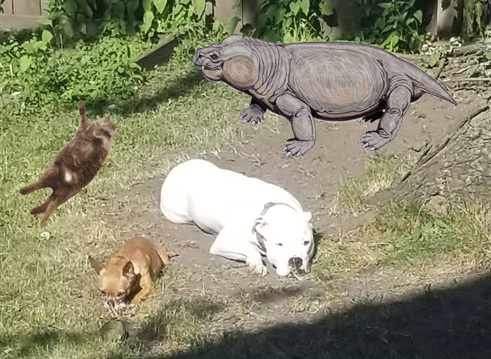

A. bainii
Aulacephalodon bainii. Live about 299-252 million years ago, during the Permian period. Aulacephalodon are a part of the dicynodontia taxon. Dicynodonts are characterized by having 2 tusks.
What mostly attracted me to want to learn more about A. bainii was most definitely because it's cute. I knew that I would have to look at a lot of images of it as I did research and I didn't want to pick something that wasn't pleasing to the eye. Okay, it's not the main reason I chose it. I remembered that only 30% of terrestrial species survived the Permian extinction, and A. bainii was one of those species, so I was curious to learn more about those species, and that led me to finding the A. bainii.

How was the name Aulacephalodon determined?
It comes from a triad of Greek words. Aulak meaning "a furrow", kephale meaning "head" and odon meaning "tooth". So the name furrow-head-tooth was born, well maybe not born, but strung together in a logical fashion.
Go somewhere
What are A. bainii's general features?
- Their unique feature is that they had tusks instead of canines, and are the only dicynodonts with tusks. This makes up for the fact that they’re just medium-sized compared to other dicynodonts. A.bainii are known for having short, broad skulls. 3 of the main criteria used to determine if a skull belongs to A. bainii are the length-breadth ratio, the shape of cranial bones, and nasal bosses.
- They may have been inefficient walkers. Footprints were found, and while not sure if they actually belong to A.bainii or a related species, the pace of these footprints is about 600mm and the overall tracks had a width of 800mm.
- They also have a beak structure at the end of their short snout and palatal ridges which shows that biting took place at the tip of their jaws.

What did A. bainii like to eat?
A. bainii had a beak as well as palatal ridges which lends evidence to it being a herbivore. They most likely ate from the Schizoneura and Phyllotheca genuses, as those were the most common plants in it's environment. The beak helped it cut through the stems of the woody plants.
Go somewhere
Sexual Dimorphism
- A bivariate analysis of skulls revealed that there might not be much if any difference in the male and females of A.bainii. Robert Broom, the founder of 2 Dicyndont species, speculated that male A.bainii have larger nasal bosses and canine tusks that are further apart and longer than the females have.
- Image A: Sex could not be determined, but speculated to be a young male
- Image B: Female skull
- Image C: Male skull
Niche/Ecosystem
Dominate terrestrial vertebrate of its time. It’s speculated that because of A.bainii’s ontogenetically increasing body size, the size of its occupied niche increased as well. This thought is based on Alligator and Crocodylus who have ecological roles that change throughout their life.
Go somewhere
Could there be others, or could there be only one?
Since they’ve only found fragments of fossilized bones, it’s hard to tell if these are all in fact different species or if they’re just Aulacephalodon at different ages/growth stages.
Go somewhere